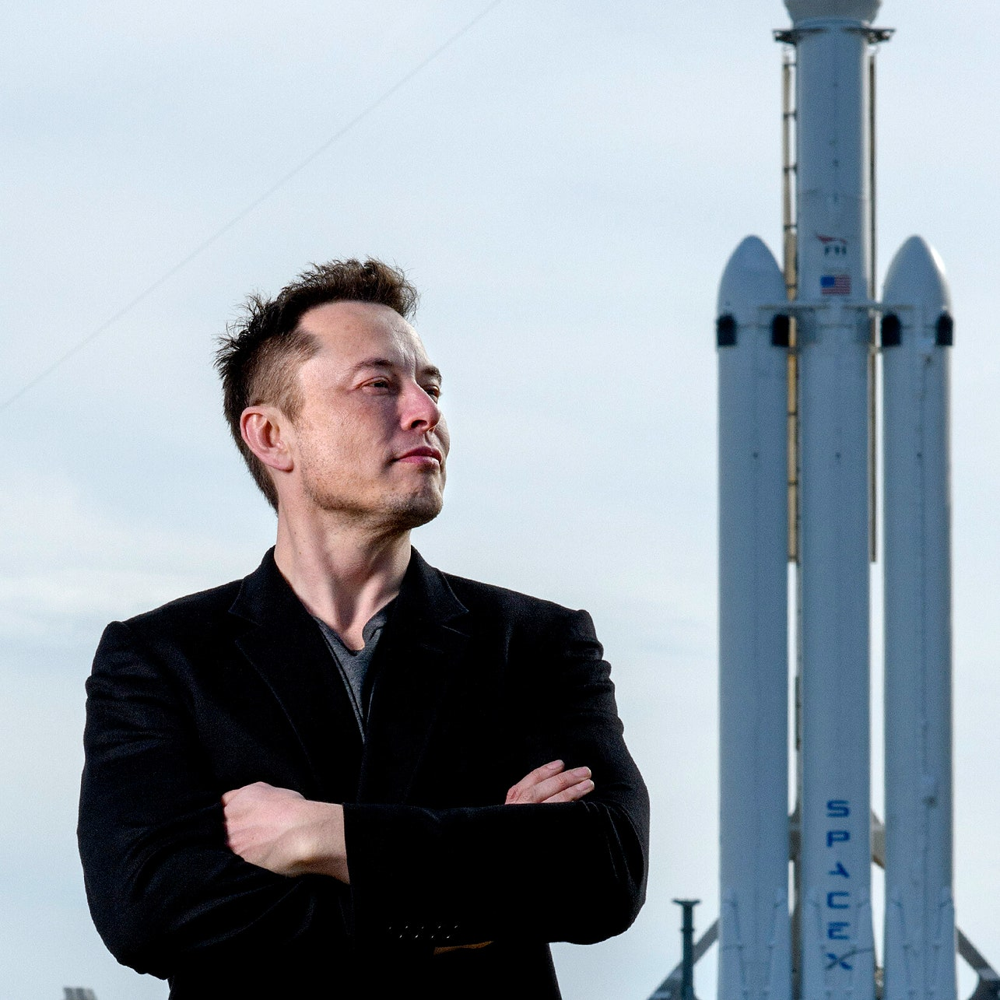
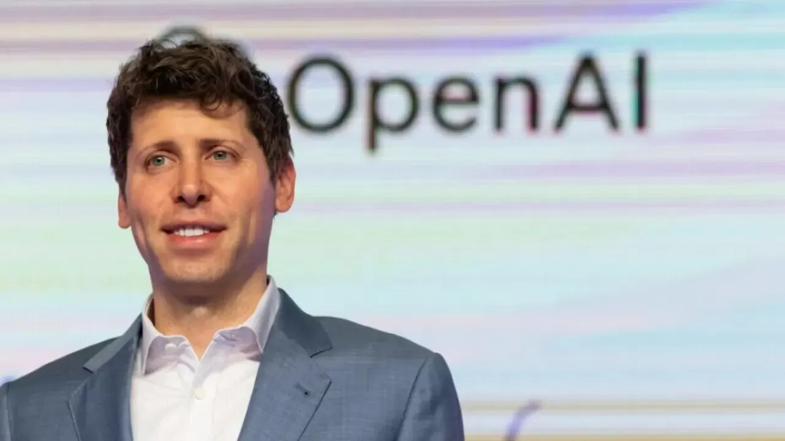

Main Page
some paragraph text
Elon Musk
Elon Reeve Musk ist ein visionärer Unternehmer und Ingenieur, der für seine Arbeiten in verschiedenen Bereichen der Technologie und Raumfahrt bekannt ist. Hier sind einige wichtige Aspekte seines Lebens und seiner Karriere:
Frühes Leben und Bildung
- Geboren: 28. Juni 1971 in Pretoria, Südafrika
- Bildung:
- Queen's University
- University of Pennsylvania
- Bachelor in Wirtschaftswissenschaften und Physik
Berufliche Laufbahn
- Zip2 (1996-1999):
- Mitbegründer
- Verkauft für $307 Millionen an Compaq
- X.com / PayPal (1999-2002):
- Mitbegründer
- Fusion mit Confinity zu PayPal
- Verkauft für $1,5 Milliarden an eBay
- SpaceX (seit 2002):
- Gründer und CEO
- Entwicklung der Falcon- und Starship-Raketen
- Tesla (seit 2004):
- CEO und Produktarchitekt
- Fokus auf Elektrofahrzeuge und nachhaltige Energie
- Neuralink (seit 2016):
- Mitbegründer
- Forschung an Gehirn-Computer-Schnittstellen
- The Boring Company (seit 2016):
- Gründer
- Entwicklung von Tunnelbauprojekten
When something is important enough, you do it even if the odds are not in your favor.
Wichtige Milestones
| Jahr | Ereignis |
|---|---|
| 1999 | Verkauf von Zip2 |
| 2002 | Verkauf von PayPal |
| 2002 | Gründung von SpaceX |
| 2004 | Beitritt zu Tesla |
| 2016 | Gründung von Neuralink und The Boring Company |
Elon Musk hat mit seinen Unternehmen SpaceX und Tesla in den jeweiligen Branchen bedeutende technologische Fortschritte erzielt und strebt nach einer nachhaltigeren Zukunft.
Sam Altman
Samuel Harris Altman ist ein amerikanischer Unternehmer, Investor und Programmierer, der vor allem für seine Rolle bei OpenAI bekannt ist. Hier sind einige wichtige Aspekte seines Lebens und seiner Karriere:
Frühes Leben und Bildung
- Geboren: 22. April 1985 in Chicago, Illinois
- Bildung:
- John Burroughs School
- Stanford University (abgebrochen)
Berufliche Laufbahn
- Loopt (2005-2012):
- Mitbegründer und CEO
- Verkauft für $43 Millionen an Green Dot Corporation
- Y Combinator (2014-2019):
- Präsident von Y Combinator
- Förderung vieler erfolgreicher Start-ups
- OpenAI (seit 2019):
- CEO
- Entwicklung von künstlicher Intelligenz
AI will probably most likely lead to the end of the world, but in the meantime, there'll be great companies.
Wichtige Milestones
| Jahr | Ereignis |
|---|---|
| 2005 | Gründung von Loopt |
| 2012 | Verkauf von Loopt |
| 2014 | Ernennung zum Präsidenten von Y Combinator |
| 2019 | CEO von OpenAI |
Sam Altman hat in der Technologiebranche bedeutende Spuren hinterlassen. Mit seiner Arbeit bei Y Combinator und OpenAI hat er zahlreiche Innovationen gefördert und viele Start-ups unterstützt.
Konflikt zwischen Elon Musk und Sam Altman
Elon Musk und Sam Altman, beide führende Persönlichkeiten in der Technologiebranche, haben in den letzten Jahren Differenzen über die Entwicklung und den Einsatz von künstlicher Intelligenz (KI) gezeigt. Hier ist ein Überblick des Konflikts:
Hintergrund
- Elon Musk:
- CEO von Tesla und SpaceX
- Mitbegründer von OpenAI
- Starke Bedenken bezüglich der Sicherheitsrisiken von KI
- Sam Altman:
- CEO und Mitbegründer von OpenAI
- Ehemaliger Präsident von Y Combinator
- Optimistischer bezüglich des Potenzials von KI
Streitpunkte
- KIs potenzielle Gefahren:
- Musk warnt vor den existenziellen Risiken durch unkontrollierte KI
- Altman glaubt an die positiven Veränderungen durch KI, wenn sie richtig gehandhabt wird
- Richtung von OpenAI:
- Musk trat aus OpenAI's Vorstand zurück, um Interessenkonflikte zu vermeiden
- Unterschiedliche Visionen für die zukünftige Entwicklung und Nutzung von KI
- Öffentlichkeitsarbeit und Kommunikation:
- Musk ist bekannt für seine öffentliche Kritik an OpenAI
- Altman verteidigt die Mission und Methoden von OpenAI
Zitate
I think we should be very careful about artificial intelligence. If I were to guess at what our biggest existential threat is, it's probably that.
I am optimistic about the future with AI. We just need to be mindful and responsible.
Zeitleiste
| Jahr | Ereignis |
|---|---|
| 2015 | Gründung von OpenAI durch Elon Musk, Sam Altman und andere |
| 2018 | Elon Musk tritt aufgrund von abweichenden Meinungen aus dem Vorstand von OpenAI zurück |
| 2020 | Öffentliche Kritik von Musk an der Richtung und den Zielen von OpenAI |
| 2023 | Musk gründet sein eigenes AI-Unternehmen xAI |
| 2024 | Elon Musk reicht eine Klage gegen OpenAI ein, mit der Begründung, dass das Unternehmen von seiner ursprünglichen Mission abweicht und die Entwicklung von KI nicht verantwortungsvoll genug handhabt |
Der Konflikt zwischen Elon Musk und Sam Altman reflektiert tiefere Fragen über die ethische und sichere Entwicklung von künstlicher Intelligenz. Während Musk vor den Gefahren warnt, bleibt Altman optimistisch bezüglich der Chancen, die KI bieten kann.
Quellen
- https://en.wikipedia.org/wiki/Elon_Musk
- https://en.wikipedia.org/wiki/Sam_Altman
- NZZ-Artikel "Aus Freundschaft wurde Konkurrenz"